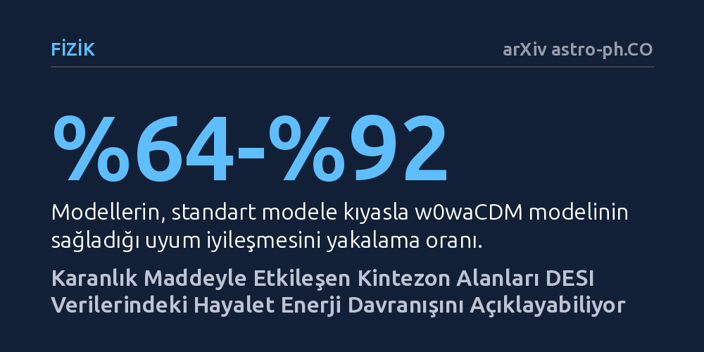

FIZIK · arXiv astro-ph.CO · 2026-10-20
Araştırmacılar, DESI gözlemlerinde ortaya çıkan beklenmedik karanlık enerji davranışının, karanlık maddeyle etkileşen kintezon modelleriyle açıklanıp açıklanamayacağını test etti. İncelenen modeller bu geçişi büyük oranda taklit etse de veriler bu mekanizmayı henüz zorunlu kılmıyor.
Karanlık enerjinin fizik kurallarını ihlal eden bir 'hayalet enerjiye' dönüşmek yerine, karanlık maddeyle etkileşerek bu yanılsamayı üretebileceğini gösteriyor.

Evrenin ivmelenerek genişlemesini açıklayan standart kozmolojik model, karanlık enerjiyi uzay boyunca sabit bir enerji yoğunluğu olarak kabul eder. Ancak Karanlık Enerji Spektroskopik Cihazı'ndan (DESI) gelen ikinci veri yayımı, karanlık enerjinin zaman içinde değiştiğine ve durum denklemi parametresinin eksi bir sınırının altına indiğine dair önemli ipuçları sundu.
Durum denkleminin eksi birin altına inmesi, teorik fizikte 'hayalet enerji' olarak adlandırılan ve kuantum düzeyinde ciddi kararsızlıklara yol açan son derece sorunlu bir senaryodur. Evrenin kararlı yapısını tehdit eden böyle bir varsayıma başvurmadan bu gözlemsel sinyalin nasıl üretilebileceği, modern astrofiziğin en sıcak tartışma başlıklarından biri haline geldi.
Araştırmacılar bu bilmeceyi çözmek adına karanlık sektörlerin birbiriyle etkileştiği modelleri mercek altına aldı. Tek başına bir kintezon skaler alanı asla eksi bir sınırını aşamazken, karanlık enerji ile karanlık madde arasındaki olası bir etkileşim, gözlemcide durum denklemi eksi birin altına inmiş gibi yapay bir algı yaratabilmektedir.
Ekip bu kuramsal mekanizmayı sınamak için kozinüs ve tepe noktası çift üstel potansiyellere sahip iki farklı eriyen kintezon modelini kurguladı. Bu modeller ardından DESI DR2 baryon akustik salınım ölçümleri, Planck uzay teleskobunun PR4 mikrodalga arka plan verileri ve üç ayrı süpernova kataloğuyla titiz bir istatistiksel uyum testine tabi tutuldu.
Elde edilen bulgular, her iki modelin de standart modele kıyasla verilerle çok daha iyi uyuştuğunu ortaya koydu. İncelenen modeller, serbest parametreli w0waCDM modelinin sağladığı uyum iyileşmesinin yüzde 64 ila 92'sini herhangi bir kararsız hayalet alan varsaymadan yeniden üretmeyi başardı.
Bununla birlikte önemli bir zamanlama uyuşmazlığı da tespit edildi: Modeller yakın evrende beklenen eğilimi yakalasa da hayalet geçişini kırmızıya kaymanın yaklaşık bir olduğu daha erken bir dönemde gerçekleştirdi; oysa DESI verisi bu geçişin 0,4 ila 0,5 civarında olmasını tercih ediyordu. Ayrıca iki seçenek arasında kozinüs potansiyelinin verilerle biraz daha iyi örtüştüğü belirlendi.
Yapılan katsayı analizinde, karanlık sektörler arasındaki etkileşim gücünün mutlak değerce 0,073 sınırının altında kaldığı hesaplandı. İstatistiki dağılımda negatif ve pozitif değerlerde iki farklı tepe noktası görülse de, hayalet benzeri geçişi yalnızca negatif etkileşim modu üretebildi ve tüm testlerde en olası seçenek bu mod oldu.
Yazarlar, verilerin karanlık sektörler arasındaki etkileşimle ortaya çıkan hayalet geçişi fikrini açıkça desteklediğini ancak mevcut ölçümlerin bu mekanizmayı henüz vazgeçilmez bir zorunluluk haline getirmediğini belirtiyor. Gelecekteki daha hassas gözlemler, bu sinyalin gerçek bir etkileşime mi yoksa istatistiksel bir dalgalanmaya mı ait olduğunu netleştirecek.